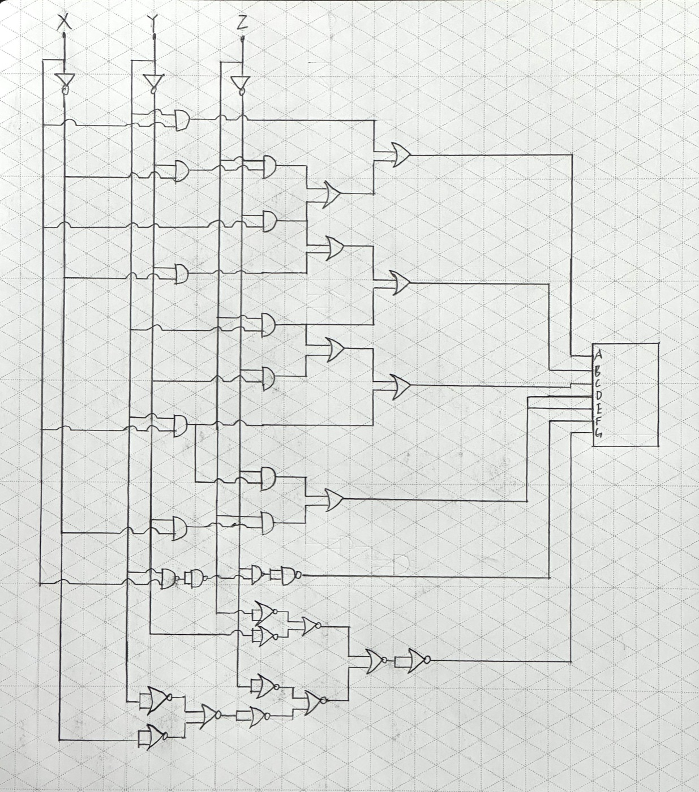
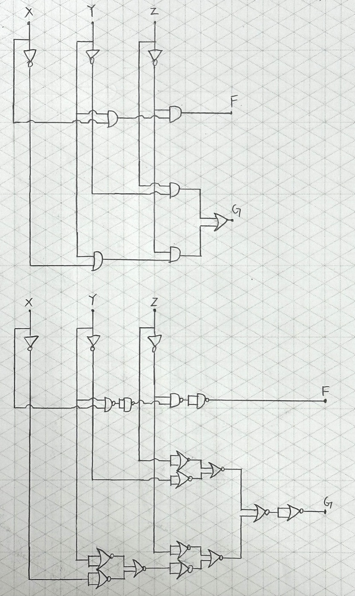
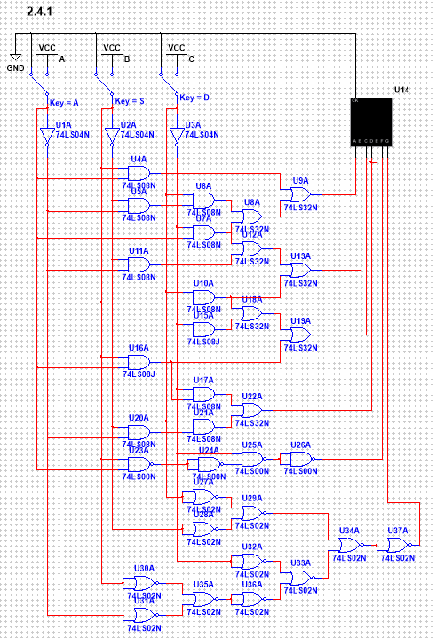
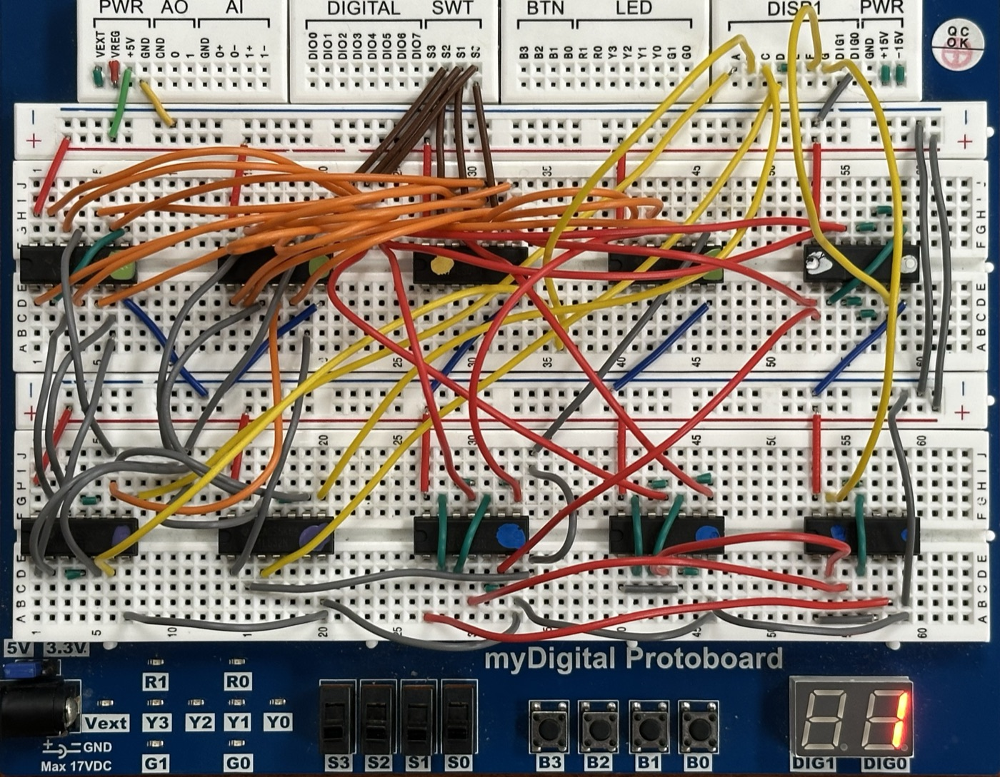
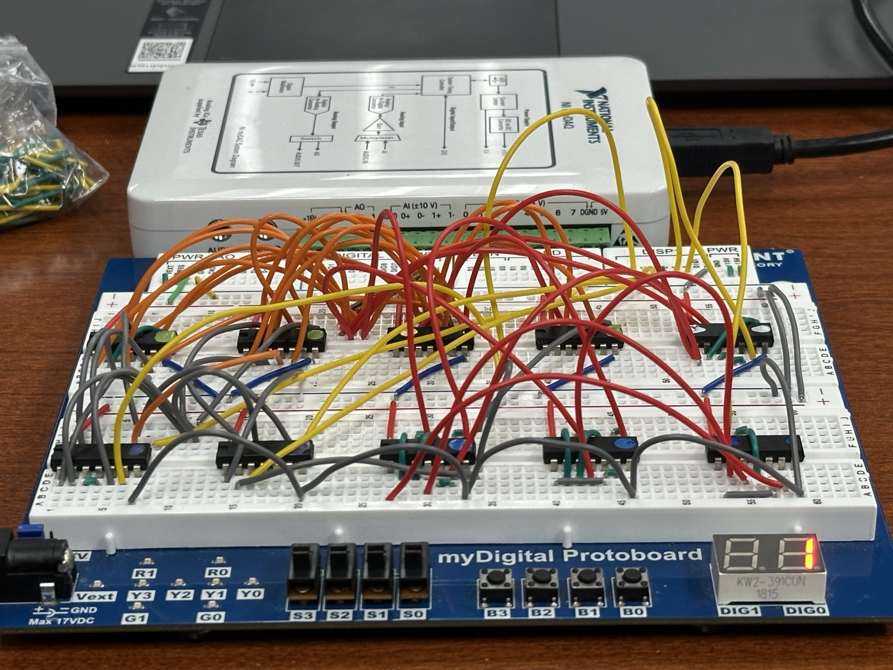
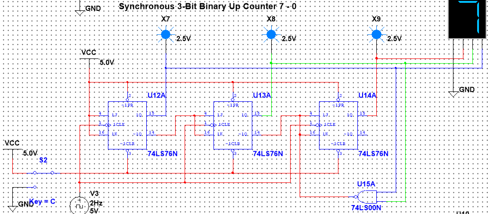
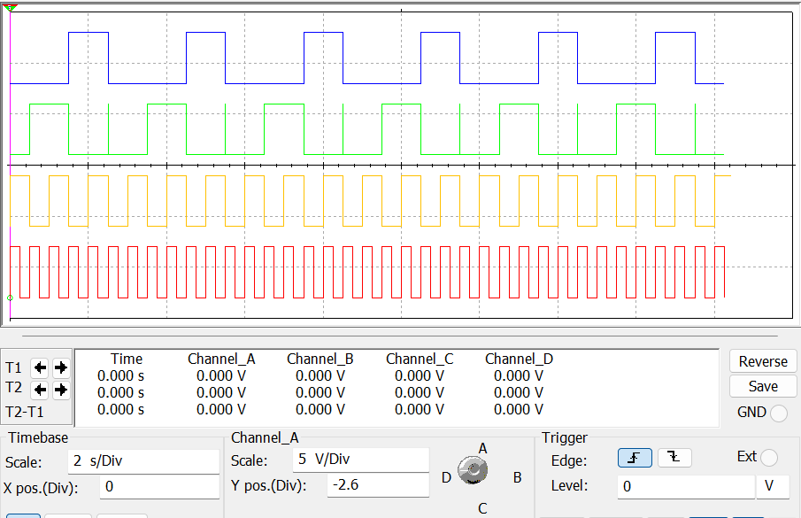
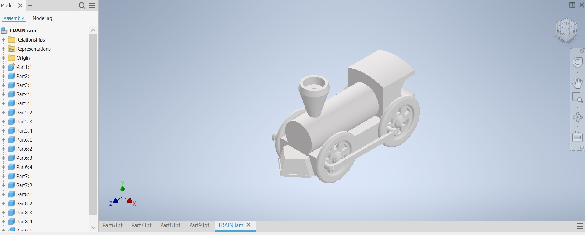

Engineering Magnet Builds
A few of my 100+ builds from my school's engineering program. Most are digital electronics: logic drawn by hand, simulated in Multisim, wired from chips on a breadboard, and programmed onto a PLD. There's also a train modeled in Autodesk Inventor.
Pictured: the digit circuit running on a breadboard, stepping through a sequence of digits on the display.







